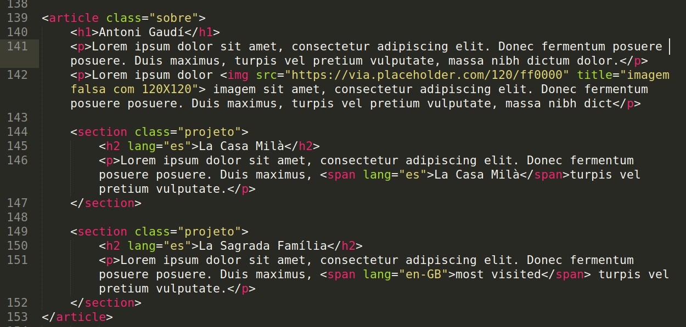
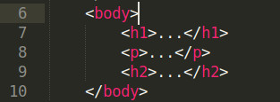

As formas de estilizar as marcações do html podem ser divididas em 3 maneiras distintas:
As folhas de estilos externas são incorporadas e devem ficar em <head></head> e a folha de estilo inline deve ser posta no próprio elemento html sem colchetes ou seletores
É uma boa prática optar pela folha de estilo externa. Recomenda-se que a sua folha inicie com @charset "UTF-8"; e com um comentário que a identifique: /* folha de estilo para produtos em mídias do tipo print */
Utilize a propriedade title="NOME" no elemento <link> para identificar a folha de estilo preferida
É também recomendado separar as folhas de estilo (com prudência: tente no máximo 5) para estilizar cada parte do seu site: layout, tipografia, formulário etc.
Caso queira oferecer folhas de estilo alternativas, utiliza rel="alternate stylesheet" title="NOME" (title é obrigatório nesse caso e deve ter o mesmo valor da folha de estilo preferida).
Um seletor determina em quais elementos uma regra de estilo é aplicada. Sendo assim, um seletor poderá ser definido com até cinco critério diferentes, a saber
A propriedade é um estilo que você aplica a um seletor (elemento html): h1{border: 1px;}
O valor do seletor h1 é 1px
Uma declaração é um par de valores, isto é uma propriedade com mais de um valor: h1{border: 1px solid red;}
Poderia ser, ainda, escrita em varias linhas com:
h1{
border: 1px;
border-style: solid;
border-color: red;
}
No CSS é possível apontar elementos dependendo de seus ancestrais, pais ou filhos. Um ancestral é qualquer elemento que contenha o alvo desejado (o descendente), não importando o número de gerações que os separam.
Exemplo
article.sobre p {
color: #ff0000;
}
O espaço entre article.sobre e p significa que este seletor encontrará qualquer elemento p que seja descendente de article com a classe sobre, não importando a sua geração. Essa forma é mais específica do que o necessário, na prática.
.sobre p {
color: #ff0000;
}
Essa forma costuma ter a especificidade suficiente, na prática.
article p {
color: #ff0000;
}
Essa forma tem pouca especificidade.
article.sobre > p {
color: #ff0000;
}
Esse seletor escolherá apenas aqueles elementos p que seja filhos do elemento article com a classe sobre
.sobre > p {
color: #ff0000;
}
Essa forma de declaração é suficiente, na prática.
.sobre > p:first-child {
color: #ff0000;
}
Essa forma de declaração (com a pseudo-classe first-child) é suficiente, na prática, quando se quer selecionar apenas o primeiro filho dentre os elementos p.
Ainda com o tema contexto (de família), os elementos irmãos são elementos de qualquer tipo que sejam elementos filhos do mesmo pai.
Mas os irmãos adjacentes são os elementos irmão que estão diretamente um ao lado do outro, sem nenhum outro irmão entre eles.
Veja na imagem abaixo que h1 e p são irmão adjacentes, assim como p e h2. Mas h1 e h2 não são irmãos adjacentes, pois, entre eles está o p.
Entretanto, são todos irmãos e também são filho de body
Ilustração de pais, filhos, irmãos e irmãos adjacentes
.sobre h1+p {
color: #ff0000;
}
Essa forma de declaração para irmão adjacente é suficiente, na prática, quando se quer selecionar o irmão p de h1. Pense á respeito: se tivesse mais do que dois elementos p como irmãos adjacentes, então o que aconteceria com o primeiro elemento p?
.sobre h1~p {
color: #ff0000;
}
O CSS3 traz para o seletor o combinador de irmão geral com o signo (~). Para esse caso a regra diz que o segundo seletor não precisa seguir imediatamente o primeiro, no entando ambos devem ter o mesmo pai. O combinador de descendente irmão geral tem h1 como irmão de h2.
Observe, agora, o código abaixo para exemplos com o uso de pseudo-elementos
p::first-line {
color: #ff0000;
}
Essa forma de declaração (com a pseudo-elemento first-line) é suficiente, na prática, quando se quer selecionar apenas a primeira linha de cada elemento p. Conheça o wbr para indicar ao agente do usuário (browser), opcionalmente, quando poderá quebrar uma linnha.
p::first-latter {
color: #ff0000;
}
É importante saber que o pseudo-elemento é aquele que não existe como elemento no html. Observe que não existe semântica para marcar a primeira letra ou a primeira linha com algum elemento que assim os define.
Por outro lado, a pseudo-classe realmente se aplica a um elemento html. o first-child, por exemplo, selecina o elemento especificado como primeiro filho de seu elemento pai.
a[rel] {
color: #ff0000;
}
Aqui tem-se um exemplo de seletor de atributo. A ideia é dar mais especificidade quando o que se quer é estilizar parte de um elemento.
a[rel="imagem"] {
color: #ff0000;
}
É possível ampliar a especificidade para todas as imagens cujo o rel seja igual a imagem.
a[rel~="data"] {
color: #ff0000;
}
Imagine que o nosso rel, do trecho de código acima, tenha valores de atributos multiplos, então ele seria assim: rel="imagem data". Nesse caso deve-se usar o sinal de til (~) que aponta para um valor de atributos específicos de uma lista de valores separados por espaços em branco.
span[lang|="en-GB"] {
color: #ff0000;
}
Usa-se esse seletor de atributo para encontrar um valor igual a outro ou que tenha um separador com hífen (-).
img[src^="http"] {
color: #ff0000;
}
O signo de circunflexo (^) quando relacionado com o seletor de substring significa "começa com".
img[src$="jpg"] {
color: #ff0000;
}
O signo de circunflexo ($) quando relacionado com o seletor de substring significa "termina com".
a[href*="mdn"] {
color: #ff0000;
}
O signo de circunflexo (*) quando relacionado com o seletor de substring significa "contém".
p, h2 {
color: #ff0000;
}
A combinação de seletores e feita separando cada seletor por vírgula.
A UI - Interface de Usuário é o desenvolvimento de computadores, sistemas, aplicações, sites, blogs etc com foco na experiência do usuário.
De uma olhada nesse exemplo com formulário para ter um exemplo da utilização desse conceito com pseudo-classes de contexto.
É uma boa prática não inchar a folha de estilo com multiplas declarações. Para isso usa-se a taquigrafia CSS economizando tepo e tamanho de arquivo. A regra para a taquigrafia é simples e metafórica: começar às 12h o manterá longe de problemas. Tenha em mente que a taquigrafia começa com o top para 12h; right para 3h; bottom para 6h e left para 9h.
Assim para o seletor padding, por exemplo, ao invés de declara assim:
p{
padding-top: 1.5px;
padding-right: .5px;
padding-bottom: 2px;
padding-left: 0.3px;
}
declara-se assim: padding{1.5px .5px 2px 0.3px;}
É comum ter valores que sejam iguais, como top/bottom e right/left, portanto existem mais 3 padrôes de taquigrafia:
A folha de estilho pode vir de diferentes fontes na seguinte ordem ascendente
Seguindo a cascata, as regras são ordenadas conforme a especificidade que deve ser calculada quando 2 ou mais regras de estilo se aplicam ao mesmo elemento e definem a mesma propriedade, com a mesma importância, na mesma posição no efeito cascata, da seguinte forma:
| Seletor | Especificidade (a, b, c, d) |
Total (base 10) |
|---|---|---|
| style="color:red;" | 1,0,0,0 | 1000 |
| #comments #respond {...} | 0,2,0,0 | 200 |
| #respod input[type="ckeckbox"] {...} | 0,1,1,1 | 111 |
| body #blog article.hentry p:first-child {...} | 0,1,2,3 | 123 |
| body #blog article[role="main"] p:first-child {...} | 0,1,2,3 | 123 |
| #comments {...} | 0,1,0,0 | 100 |
| p.auth .fn {...} | 0,0,2,1 | 21 |
| p.auth {...} | 0,0,1,1 | 11 |
| article p {...} | 0,0,0,2 | 2 |
| p {...} | 0,0,0,1 | 1 |
Os totais iguais, 123, tem a mesma especificidade. Neste caso, o seletor que aparece depois na ordem de origem tem prioridade.
A herança permite que os autores escrevam uma propriedade e valor somente uma vez. Por exemplo:
No entanto, é muito mais fácil escrever e manter a ssim: